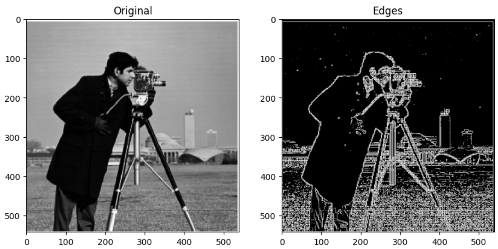
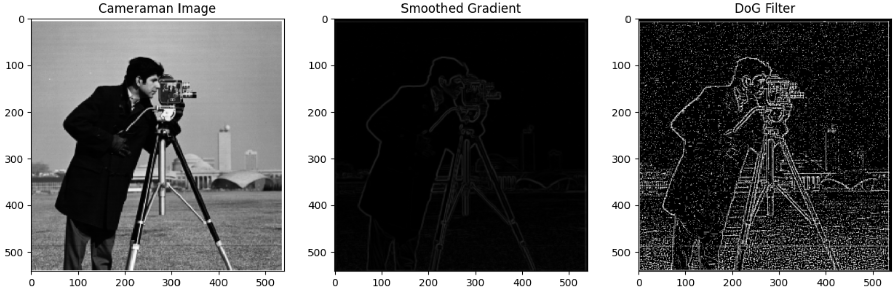
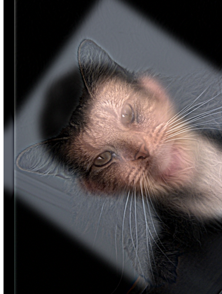

For edge detection, we first computed the gradients for the x and y directions: [-1, 1] and its transpose. Then, we convolve the image with the gradients, and calcualte the overall gradient using np.sqrt(dx^2 + dy^2), as shown below. It took some experimenting to get the right threshold value for the edge detection.
As we can see, the DoG gradient works much better for edge detection compared to the smooth gradient. By adding a gaussian filter before finding the gradient, it significantly helps reduce noise in the image. We can better detect edges, and combining the techniques allows us to efficiently use one convolution.
For sharpening images, we first extracted the low-frequency components of the image, which we get by blurring it. Then, we extract the high frequency parts, like edges, by subtracting the blurred image from the original image. This processed significantly sharpened both the images below.
To create hybrid images, I combined the low and high frequencies of both images, in this case of the person and the cat. For the high frequency, we can use a gaussian filter, then subtract the resulting image from the original version. To get the low frequency, we can just apply the gaussian filter, then combine both the high and low frequencies. It was interesting to see how both images can look very different from varying distances. The alignment function was first used to ensure both images are aligned on the same axis.
One issue was experimenting with the parameters (sigma value, kernel size) for each image when creating and applying the gaussian kernel. For high frequencies, a lower sigma value was better, while a higher value was better for low frequency images, so it took some experimentation to get the hybrid image to display.
In order to blend two images together. we can downsample/blur an image with a gaussian stack, and incrementally increasing the sigma values to get more low-frequency details. This, in combination with laplacian stacks--to take the difference between the levels of the gaussian stack just created--can help blend images together.